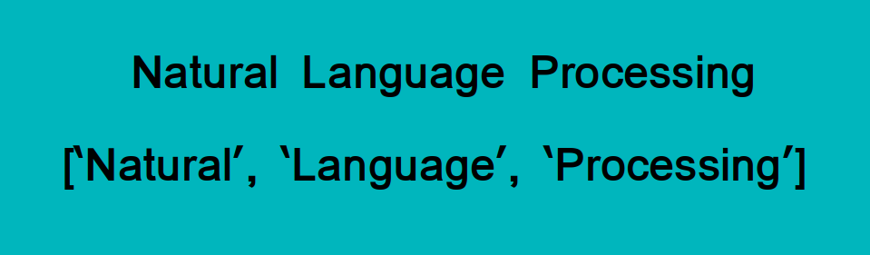
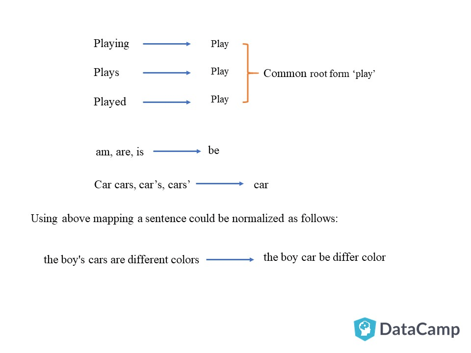

Tokenization is essentially splitting a phrase, sentence, paragraph, or an entire text document into smaller units, such as individual words or terms. Each of these smaller units are called tokens.
In tokenization, smaller units are created by locating word boundaries, these are the ending point of a word and the beginning of the next word.
Tokenization is important because the meaning of the text could easily be interpreted by analyzing the words present in the text.

There are numerous uses of doing this. We can use this tokenized form to:
- Count the number of words in the text
- Count the frequency of the word, that is, the number of times a particular word is present etc
In this project we have done tokenizatiom using NLTK library. NLTK, short for Natural Language ToolKit, is a library written in Python for symbolic and statistical Natural Language Processing.
NLTK contains a module called tokenize() which further classifies into two sub-categories:
- Word tokenize: We use the word_tokenize() method to split a sentence into tokens or words
- Sentence tokenize: We use the sent_tokenize() method to split a document or paragraph into sentences .
Now, after tokenizing the word next step is to classify words into their parts of speech and labeling them accordingly is known as part-of-speech tagging, POS-tagging, or simply tagging.
A part-of-speech tagger, or POS-tagger, processes a sequence of words, and attaches a part of speech tag to each word .
Stemming and Lemmatization are Text Normalization (or sometimes called Word Normalization) techniques in the field of Natural Language Processing that are used to prepare text, words, and documents for further processing.
Languages we speak and write are made up of several words often derived from one another. When a language contains words that are derived from another word as their use in the speech changes is called Inflected Language.

Stemming and Lemmatization helps us to achieve the root forms
Stemming is different to Lemmatization in the approach it uses to produce root forms of words and the word produced.
"Stemming is the process of reducing inflection in words to their root forms such as mapping a group of words to the same stem even if the stem itself is not a valid word in the Language."
Lemmatization, unlike Stemming is better as it reduces the inflected words properly ensuring that the root word belongs to the language.
For example, runs, running, ran are all forms of the word run, therefore run is the lemma of all these words.
Python NLTK provides WordNet Lemmatizer that uses the WordNet Database to lookup lemmas of words.
You need to provide the context in which you want to lemmatize that is the parts-of-speech (POS). This is done by giving the value for pos parameter in wordnet_lemmatizer.lemmatize. Lemmatization, unlike
Stemming, reduces the inflected words properly ensuring that the root word belongs to the language. In Lemmatization root word is called Lemma. A lemma (plural lemmas or lemmata) is the canonical form, dictionary form, or citation form of a set of words.
TF-IDF is a statistical measure that evaluates how relevant a word is to a document in a collection of documents. This is done by multiplying two metrics: how many times a word appears in a document, and the inverse document frequency of the word across a set of documents.
Cosine similarity is one of the metric to measure the text-similarity between two documents irrespective of their size in Natural language Processing. A word is represented into a vector form. The text documents are represented in n-dimensional vector space.